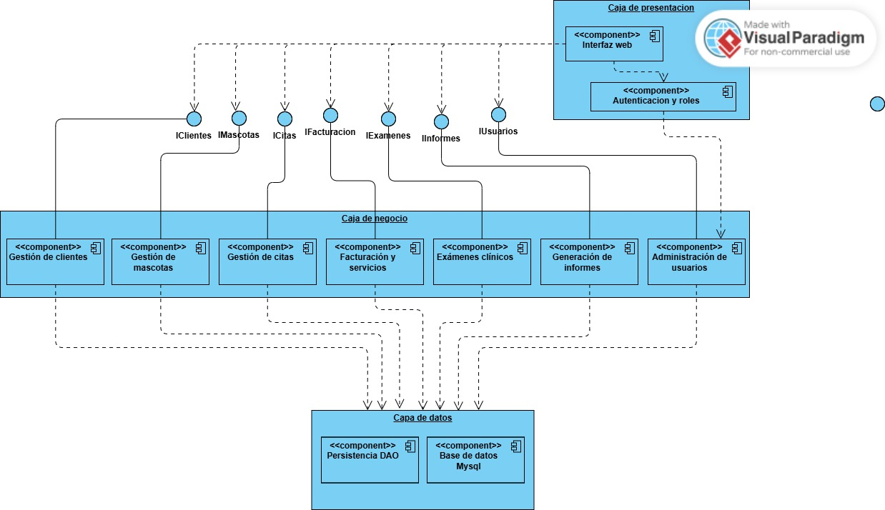
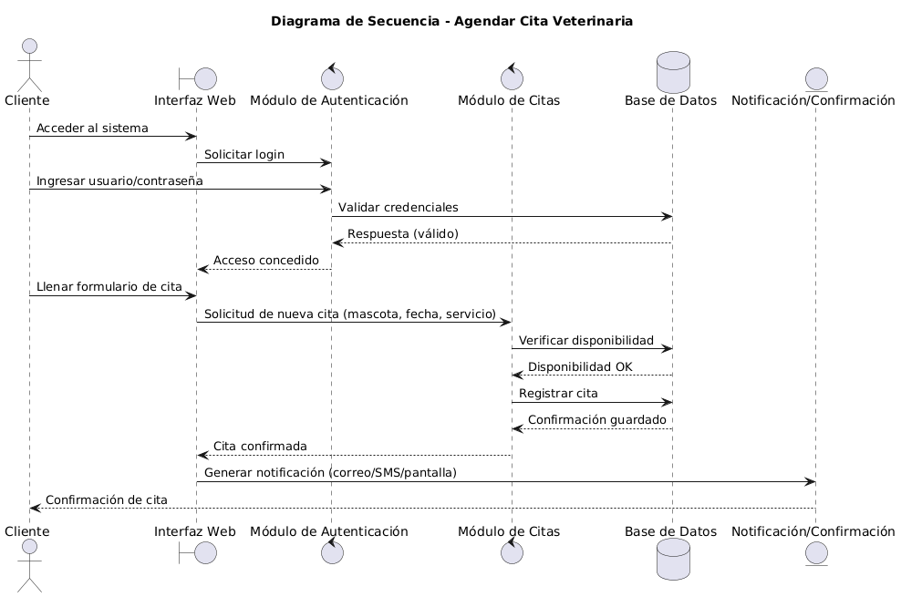
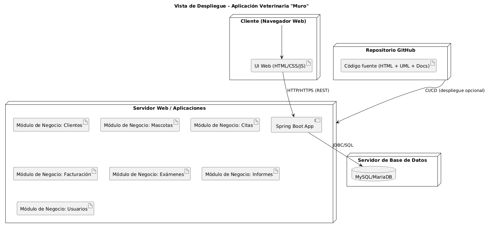

1. Justificación y Problema a Resolver
Actualmente, la "Veterinaria Muro" gestiona su información de forma manual, lo que ocasiona retrasos, pérdida de tiempo, inconsistencias en los datos y molestias a los clientes.
El objetivo principal es diseñar una aplicación que automatice y centralice la gestión de historias clínicas, citas y facturación, mejorando la calidad del servicio y posicionando a la veterinaria en un nivel competitivo.
2. Modelo de Desarrollo Propuesto
Metodología Ágil (Scrum)
- Flexibilidad: Permite incorporar cambios de requisitos durante el desarrollo.
- Entregas parciales: Cada Sprint produce una funcionalidad usable (ej: módulo de citas).
- Colaboración: El cliente participa activamente con retroalimentación continua.
- Reducción de riesgos: Los problemas se detectan temprano en ciclos cortos.
3. Requisitos Funcionales
- Gestión de Mascotas
- Gestión de Clientes
- Gestión de Veterinarios
- Gestión de Citas
- Gestión de Servicios y Facturación
- Gestión de Exámenes Clínicos
- Administración de Usuarios y Perfiles
- Generación de Informes
- Consultas: historial clínico, ventas, citas programadas
4. Requisitos No Funcionales (FURPS+)
Usabilidad
- Interfaz intuitiva y sencilla
- Colores claros y accesibilidad para personas con problemas visuales
- Diseño responsive
Confiabilidad
- Disponible 24/7
- Consistencia en la base de datos
- Copia de seguridad automática
Rendimiento
- Respuestas rápidas
- Carga de interfaz eficiente
Soportabilidad
- Documentación PDF y manuales
- Capacitación a usuarios
5. Alcance y Restricciones del Sistema
Alcance
- Incluye: Gestión de clientes, mascotas, citas, facturación, servicios, exámenes clínicos, historial médico e informes.
- No incluye: Integraciones externas, aplicaciones móviles nativas ni telemedicina.
Restricciones
- Uso de Java y frameworks compatibles
- Infraestructura de bajo costo
- Acceso vía web
Suposiciones
- Conexión a Internet estable
- Personal capacitado en informática básica
- Clientes con acceso a dispositivos con navegador
6. Involucrados y Preocupaciones
- Veterinario (Cliente): confiabilidad, calidad del servicio, reducción de tiempos.
- Auxiliar/Secretaria: facilidad de uso, eficiencia en gestión de citas.
- Clientes (Dueños de mascotas): rapidez en agendamiento, seguridad de datos.
- Administrador del sistema: seguridad, disponibilidad, respaldo de datos.
- Equipo de desarrollo: factibilidad técnica, cumplimiento de plazos.
7. Diseño Arquitectónico
Racional Arquitectónico
Estilo elegido: Arquitectura en Capas
Justificación: Separación modular facilita el mantenimiento y escalabilidad. Se contemplan capas de Presentación, Lógica de Negocio y Datos.
Decisiones Clave
- Lenguaje: Java
- Base de datos: MySQL/MariaDB
- Framework: Spring Boot
- Gestión de versiones: GitHub
Vistas Arquitectónicas
Vista Lógica (Componentes)
Muestra los componentes principales del sistema y sus relaciones. Componentes: Clientes, Mascotas, Citas, Servicios, Facturación, Exámenes, Informes, Administración.

Vista de Proceso
Describe la interacción entre componentes para realizar una tarea. Ejemplo: Flujo de asignación de una nueva cita, desde la solicitud del usuario hasta la confirmación en la base de datos.

Vista de Despliegue
Ilustra cómo se distribuye el software en la infraestructura física. El sistema se despliega en un servidor web que contiene la aplicación Spring Boot, conectado a un servidor de base de datos MySQL. Los usuarios acceden vía web.
